library(tidyverse)
library(easystats)
library(DataExplorer) # nicht vergessen zu installieren
library(ggpubr) # optional, Datenvisualisierung
library(ggstatsplot) # optional, Datenvisualisierung5 Daten verbildlichen
Schlüsselwörter
Statistik, Prognose, Modellierung, R, Datenanalyse, Regression
\[ \definecolor{ycol}{RGB}{230,159,0} \definecolor{modelcol}{RGB}{86,180,233} \definecolor{errorcol}{RGB}{0,158,115} \definecolor{beta0col}{RGB}{213,94,0} \definecolor{beta1col}{RGB}{0,114,178} \definecolor{xcol}{RGB}{204,121,167} \]
5.1 Einstieg
5.1.1 Lernziele
- Sie können erläutern, wann und wozu das Visualisieren statistischer Inhalte sinnvoll ist.
- Sie kennen typische Arten von Datendiagrammen.
- Sie können typische Datendiagramme mit R visualisieren.
- Sie können zentrale Ergebnisse aus Datendiagrammen herauslesen.
5.1.2 Benötigte R-Pakete und Daten
Neben den üblichen Paketen tidyverse (Wickham et al., 2019) und easystats (Lüdecke et al., 2022) benötigen Sie in diesem Kapitel noch DataExplorer (Cui, 2024) und optional ggpubr (Kassambara, 2023) und ggstatsplot (Patil, 2021). Wir arbeiten wieder mit dem Datensatz mariokart, s. Kapitel 3.7.3.
5.1.3 Quiz zum Einstieg
Vielleicht fordert Sie die Lehrkraft zu einem Einstiegsquiz auf, etwa mittels der Plattform antworte.jetzt. Alternativ überlegen Sie sich selber 10 Quiz-Aufgaben zum Stoff des letzten Kapitels.
5.1.4 Wozu das alles?
ü•∑ Wir m√ºssen die Galaxis retten, Kermit!
üê∏ Schlock
5.2 Ein Dino sagt mehr als 1000 Worte
Es heißt, ein Bild sage mehr als 1000 Worte. Schon richtig, aber ein Dinosaurier sagt auch mehr als 1000 Worte (Fitzmaurice, 2017). In Abbildung 5.1 sieht man verschiedene “Bilder”, also Datensätze: etwa einen Dino und einmal einen Kreis. Obwohl die Bilder grundverschieden sind, sind die zentralen statistischen Kennwerte (praktisch) identisch. In dieselbe Bresche schlägt “Anscombes Quartett” (Anscombe, 1973). Es zeigt vier Datensätze, in denen die zentralen Statistiken fast identisch sind, also Mittelwerte, Streuungen, Korrelationen. Aber die Streudiagramme sind grundverschieden. Anscombes Beispiel zeigt (zugespitzt): Eine Visualisierung enthüllt, was der Statistik (als Kennzahl) verhüllt bleibt. Statistische Diagramme können Einblicke geben, die sich nicht (leicht) in grundlegenden Statistiken (Kennwerten) abbilden. Unter visueller Cortex ist sehr leistungsfähig. Wir können ohne Mühe eine große Anzahl an visuellen Informationen aufnehmen und parallel verarbeiten. Aus diesem Grund sind Datendiagramme eine effektive und einfache Art, aus Daten Erkenntnisse zu ziehen. Nutzen Sie Datendiagramme umfassend; sie sind einfach zu verstehen und doch sehr mächtig.

Abbildung 5.2 zeigt Anscombes Quartett.
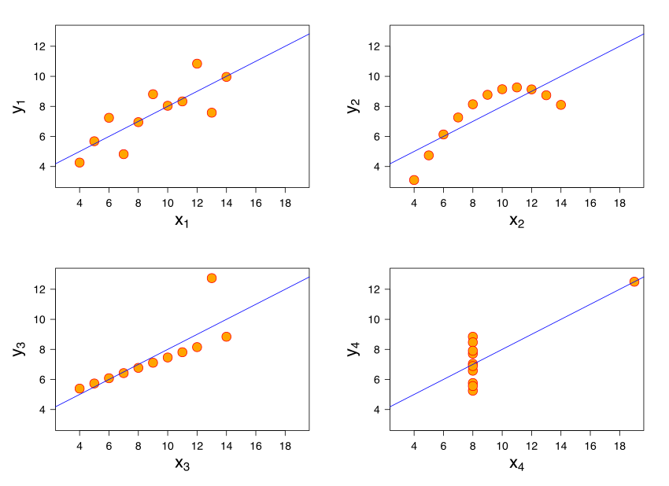
Definition 5.1 (Datendiagramm) Ein Datendiagramm (kurz: Diagramm) ist ein Diagramm, das Daten und Statistiken zeigt, mit dem Zweck, Erkenntnisse daraus zu ziehen.
Beispiel 5.1 (Aus der Forschung: Ein aufwändiges (und ansprechendes) Datendiagramm)
Auf Basis des Korruptionsindex von Transparency International (2017) erstellt Wilke (2024) ein Diagramm zum Zusammenhang vom Entwicklungsindex (Lebenserwartung, Bildung, Einkommen; vgl. Hou et al. (2015)) und Korruption, jeweils auf Landesebene, s. Abbildung 5.3.
Es finden sich in der Literatur (im Internet) viele weitere Beispiele für handwerklich meisterhaft erstelle Datendiagramme, die in vielen Fällen mit R erstellt werden (vgl. Scherer et al., 2019). \(\square\)

Abbildung 5.4 zeigt ein Bild mit mehreren (5) Variablen, die jeweils einer “Dimension” entsprechen. Wie man (nicht) sieht, wird es langsam unübersichtlich. Offenbar kann man in einem Bild nicht beliebig viele Variablen sinnvoll reinquetschen. Die “Dimensionalität” eines Diagramms hat ihre Grenzen, vielleicht bei vier bis sechs Variablen. Möchten wir den Zusammenhang von vielen Variablen verstehen, kommen wir mit Bildern oft nicht weiter. Dann brauchen wir andere Werkzeuge: Statistik, komm zu Hilfe. Bei klaren Zusammenhängen und wenig Variablen braucht man keine (aufwändige) Statistik. Ein Bild, also ein Datendiagramm, ist dann oft ausreichend. Man könnte sagen, dass es Statistik nur deshalb gibt, weil unser Auge mit mehr als ca. vier bis sechs Variablen nicht gleichzeitig umgehen kann.

Übungsaufgabe 5.1 Wie viele Variablen sind in Abbildung 5.4 dargestellt?1
5.3 Nomenklatur von Datendiagrammen
Tabelle 5.1 zeigt eine – sehr kurze Nomenklatur – von Datendiagrammen. Weitere Nomenklaturen sind möglich, aber wir halten hier die Sache einfach. Wer an Vertiefung interessiert ist, findet bei data-to-vis einen Überblick über verschiedene Typen an Diagrammen, sogar in Form einer systematischen Nomenklatur: https://www.data-to-viz.com/.
| Erkenntnisziel | qualitativ | quantitativ |
|---|---|---|
| Verteilung | Balkendiagramm | Histogramm und Dichtediagramm |
| Zusammenhang | gefülltes Balkendiagramm | Streudiagramm |
| Unterschied | gefülltes Balkendiagramm | Boxplot |
5.4 Verteilungen verbildlichen
5.4.1 Verteilung einer nominalen Variable
Definition 5.2 (Verteilung) Eine (Häufigkeits-)Verteilung einer Variablen \(X\) schlüsselt auf, wie häufig jede Ausprägung von \(X\) ist. \(\square\)
Beispiel 5.2 Tabelle 5.2 zeigt die Häufigkeitsverteilung von cond (condition, also der Zustand des Artikels, neu oder gebraucht) aus dem Datensatz mariokart. Die Variable hat 2 Ausprägungen; z.\(\,\)B. kommt die Ausprägung new 59 mal vor. \(\square\)
cond aus dem Datensatz mariokart
| cond | n |
|---|---|
| new | 59 |
| used | 84 |
Zugegeben, das Datendiagramm von cond ist nicht so aufregend, s. Abbildung 5.5. Wie man sieht, besteht so ein Diagramm aus Balken, daher heißt es Balkendiagramm. Man kann so ein Diagramm um 90\(\,\)° drehen, s. Abbildung 5.5; keine Ausrichtung ist grundsätzlich besser als die andere.
Definition 5.3 (Balkendiagramm) Ein Balkendiagramm ist eine grafische Darstellung von Werten, zumeist für die Häufigkeiten bestimmter Kategorien, also Ausprägungen nominaler Variablen. Dabei werden rechteckige Balken verwendet, und die Länge eines Balkens ist proportional zur dargestellten Häufigkeit. \(\square\)

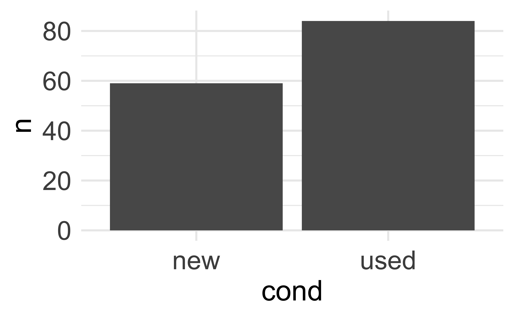
cond
Es gibt viele Methoden, sich mit R ein Balkendiagramm ausgeben zu lassen. Eine einfache, komfortable ist die mit dem Paket DataExplorer, s. Abbildung 5.5; wir betrachten gleich die Syntax. Zuerst importieren wir die Daten, s. Listing 3.2. Außerdem nicht vergessen, das Paket DataExplorer mit dem Befehl library zu starten. (Natürlich müssen Sie das Paket einmalig installiert haben, bevor Sie es starten können.) In diesem Paket “wohnen” die Befehle, die wir zum Erstellen der Datendiagramme nutzen werden. Listing 5.1 zeigt die Syntax, um ein Balkendiagramm zu erstellen. Auf der Hilfeseite der Funktion finden Sie weitere Details zur Funktion.
Die Syntax ist in Listing 5.1 abgedruckt (Zur Erinnerung: %>% nennt man die “Pfeife und lässt sich als”und dann” übersetzen, vgl. Kapitel 4.3). Übersetzen wir die Syntax ins Deutsche:
Nimm den Datensatz `mariokart` *und dann*
wähle die Spalte cond *und dann*
zeichne ein Balkendiagramm. Fertig!Übungsaufgabe 5.2 (Spalten wählen für das Balkendiagramm) Hätten wir andere Spalten ausgewählt, so würde das Balkendiagramm die Verteilung jener Variablen zeigen. Ja, Sie können auch mehrere Variablen auf einmal auswählen. Probieren Sie das doch mal aus! \(\square\)
Übungsaufgabe 5.3 (Visualisieren Sie die Verteilung von stock_photo!) Erstellen Sie ein geeignetes Diagramm, um die Häufigkeit jeder Ausprägung von stock_photo (Datensatz mariokart) darzustellen.
Lösung
Mit plot_bar aus DataExplorer kann man Balkendiagramme darstellen. \(\square\)
5.4.2 Verteilung einer quantitativen Variable
Bei einer quantitativen Variablen mit vielen Ausprägungen wäre ein Balkendiagramm nicht so aussagekräftig, s. Abbildung 5.7 (links). Es gibt einfach zu viele Ausprägungen.
Die Lösung: Wir reduzieren die Anzahl der Ausprägungen, in dem wir auf ganze Dollar runden. Oder, um noch weniger Ausprägungen zu bekommen, können wir einfach Gruppen definieren, z.\(\,\)B.
- Gruppe 1: 0-5 Dollar
- Gruppe 2: 6-10 Dollar
- Gruppe 3: 11-15 Dollar
- …
In Abbildung 5.7 (rechts) sind z.\(\,\)B. die Ausprägungen des Verkaufspreises (total_pr) in Gruppen der Breite von 5 Dollar aufgeteilt worden. Zusätzlich sind noch die einzelnen Werte als schwarze Punkte gezeigt.
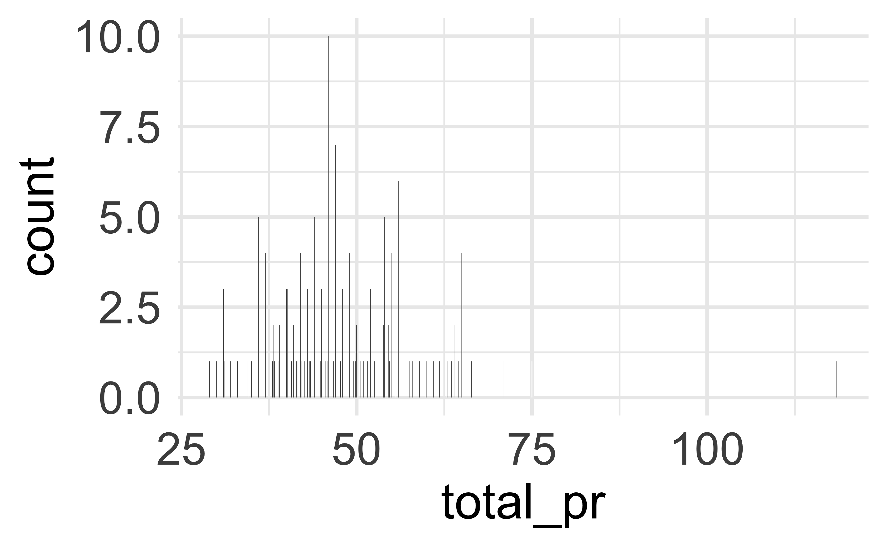

total_pr)
Definition 5.4 (Histogramm) Ein Histogramm ist ein Diagramm zur Darstellung der Häufigkeitsverteilung einer quantitativen Variablen. Die Daten werden in Gruppen (Klassen) eingeteilt, die dann durch einen Balken (pro Klasse) dargestellt werden. Die Höhe der Balken zeigt die Häufigkeit der Daten in dieser Gruppe/in diesem Balken (bei konstanter Balkenbreite).
Es gibt keine klare Regel, in wie viele Balken ein Histogramm gegliedert sein sollte. Nur: Es sollten werder sehr viele noch zu wenige sein, s. Abbildung 5.8 (links) bzw. Abbildung 5.8 (rechts). Zur Erstellung eines Histogramms können Sie die Syntax Listing 5.2 nutzen, vgl. Abbildung 5.9, links.


Übungsaufgabe 5.4 (Visualisieren Sie die Verteilung von ship_pr anhand eines Histogramms!)
mariokart |>
select(ship_pr) |>
plot_histogram()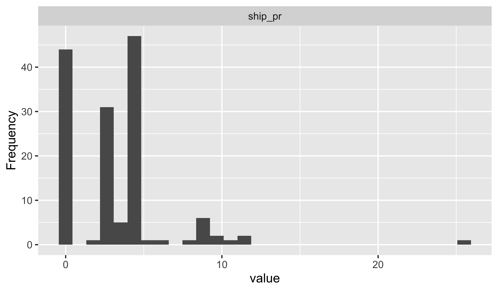
Abbildung 5.10 fügt zum Histogramm ein Dichtediagramm hinzu (durchgezogene Linie). Ein Dichtediagramm ähnelt einem “glattgeschmirgelten” Histogramm.
Definition 5.5 (Dichtediagramm) Ein Dichtediagramm visualisiert die Verteilung einer stetigen Variablen. Im Gegensatz zum Histogramm wird der Verlauf der Kurve geglättet, so kann Rauschen (Zufallsschwankung) besser ausgeblendet werden. (Mit Dichte ist die relative Anzahl der Beobachtungen pro Einheit der Variablen auf der X-Achse gemeint.)

total_pr
Übungsaufgabe 5.5 Erstellen Sie das Diagramm Abbildung 5.9, rechtes Teildiagramm!2\(\square\)
Verteilungen unterscheiden sich z.\(\,\)B. in ihrem “typischen” oder “mittleren” Wert (vgl. Kapitel 6.5), aber auch in ihrer Streuung (vgl. Kapitel 7.3). (Diagramme von) Verteilungen können symmetrisch oder schief (nicht symmetrisch) sein, s. Abbildung 5.11. Abbildung 5.12 zeigt verschiedene Formen von Verteilungen. “Bimodal” meint “zweigipflig” und “multimodal” entsprechend “mehrgipflig”.3


Übungsaufgabe 5.6 (Verteilungsform von total_pr?) Benennen Sie die am besten passende Verteilungsform für die Variable total_pr.
Lösung
mariokart |>
select(total_pr) |>
plot_density()
Die Verteilung ist rechtsschief. \(\square\)
5.5 Spezialfall Normalverteilung
5.5.1 Grundlagen
Eine Normalverteilung ist eine bestimmte Art von Verteilung einer stetigen quantitativen Variablen. Aber sie ist besonders wichtig, und wird daher hier besonders hervorgehoben. Eine Normalverteilung sehen Sie in Abbildung 5.11, links. Die Normalverteilung ist in der Statistik von hoher Bedeutung, da sie sich unter (recht häufigen) Bedingungen zwangsläufig ergeben muss und vielseitig Verwendung findet.
Definition 5.6 (Normalverteilung) Normalverteilungen haben eine charakteristische symmetrische Glockenform. Normalverteilungen können sich unterscheiden in ihrem Mittelwert \(\mu\) und ihrer Streuung, \(\sigma\). Diese beiden Größen (“Parameter”) determinieren den Graphen einer bestimmten Normalverteilungsfunktion, s. Abbildung 5.13. Sind diese beiden Parameter bekannt, so ist die Dichte jedes beliebigen Datenpunkts (aus dieser Normalverteilung) bestimmt.\(\square\)
Eine normalverteilte Zufallsvariable \(X\) mit einem bestimmten Mittelwert und einer bestimmten Streuung schreibt man kurz so:
\[X \sim \mathcal{N}(\mu, \sigma)\]

Beispiel 5.3 Beispiele für normalverteilte Variablen sind Körpergröße von Männern oder Frauen, IQ-Werte, einige Prüfungsergebnisse, Messfehler, Lebensdauer von Glühbirnen, Gewichte von Brotlaiben, Milchproduktion von Kühen, Brustumfang schottischer Soldaten (Lyon, 2014). \(\square\)
Definition 5.7 (Normalverteilung) Eine Normalverteilung ist eine spezielle Art von Verteilung einer quantitativen Variablen. Sie ist symmetrisch, glockenförmig, stetig, unimodal und ihr Mittelwert, Median und Modus identisch. Sie lässt sich durch zwei Parameter vollständig beschreiben: Mittelwert (\(\mu\)) und Streuung (\(\sigma\)). \(\square\)
Abbildung 5.14 zeigt interaktive Beispiele für Normalverteilung. Wählen Sie einfach Mittelwert (\(\mu\)) und Streuung (\(\sigma\)) anhand der Schieberegler.4
5.5.2 Fläche unter der Kurve
Kennt man die beiden Parameter der Normalverteilung, Mittelwert und Streuung (SD, \(\sigma\)), einer Normalverteilung, so kann man einfach angeben, welcher Anteil der Fläche (unter der Kurve) der Normalverteilung sich in einem bestimmten Bereich befindet, s. Abbildung 5.15.
Davon leitet sich die “68-95-99.7-Prozentregel” ab, die angibt, in welchem Bereich sich welcher Anteil der Fläche befindet:
- \(68\,\%\) im Bereich \(\mu\pm 1 \cdot \sigma\)
- \(95\,\%\) im Bereich \(\mu\pm 2 \cdot \sigma\)
- \(99{.}7\,\%\) im Bereich \(\mu\pm 3 \cdot \sigma\)

5.5.3 IQ-Verteilung
Die Verteilung der Zufallsvariablen IQ ist normalverteilt mit einem Mittelwert von 100 und einer Streuung von 15, s. Abbildung 5.16:
\(IQ \sim \mathcal{N}(100,15)\)
Übungsaufgabe 5.7 (Wie schlau muss man (nicht) sein?)
- Wie schlau muss man sein, um zu den unteren 75%, 50%, 25%, 5%, 1% zu gehören?
- Anders gesagt: Welcher IQ-Wert wird von 75%, 50%, … der Leute nicht überschritten?\(\square\)
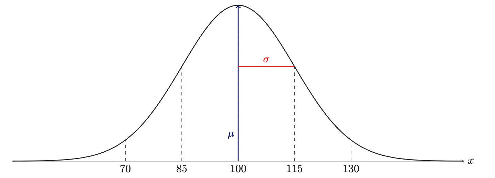
5.5.4 Vertiefung: Entstehung einer Normalverteilung
Definition 5.8 (Entstehung einer Normalverteilung) Wenn sich eine Variable \(X\) als Summe mehrerer, unabhängiger, etwa gleich starker Summanden, dann kann man erwarten, dass sich diese Variable \(X\) tendenziell normalverteilt. \(\square\)
Die Entstehhung einer Normalverteilung kann man gut anhand des Galton-Bretts veranschaulichen.

5.6 Zusammenhänge verbildlichen
5.6.1 Zusammenhang nominaler Variablen
Beispiel 5.4 (Beispiele für Zusammenhänge bei nominalen Variablen)
- Hängt Berufserfolg (Führungskraft ja/nein) mit dem Geschlecht zusammen?
- Hängt der Beruf des Vaters mit dem Schulabschluss des Kindes (Abitur, Realschule, Mittelschule) zusammen?
- Gibt es einen Zusammenhang zwischen der bevorzugten Automarke und der Präferenz für eine politische Partei? \(\square\)
Sagen wir, Sie arbeiten immer noch beim Online-Auktionshaus und Sie fragen sich, ob ein Produktfoto wohl primär bei neuwertigen Produkten beiliegt, aber nicht bei gebrauchten? Dazu betrachten Sie wieder die mariokart-Daten, s. Abbildung 5.17. Tatsächlich: Es findet sich ein Zusammenhang zwischen der Tatsache, ob dem versteigerten Produkt ein Foto bei lag und ob es neuwertig oder gebraucht war (Abbildung 5.17, links). Bei neuen Spielen war fast immer (ca. 90%) ein Foto dabei; bei gebrauchten Spielen immerhin bei gut der Hälfte der Fälle.


wheel und Foto in den Daten
Anders sieht es aus für die Frage, ob ein (oder mehrere) Lenkräder dem Spiel beilagen (oder nicht) in Zusammenhang mit der Fotofrage Hier gab es fast keinen Unterschied zwischen neuen und alten Spielen, was die Frage nach “Foto des Produkts dabei” betraf (Abbildung 5.17, rechts), der Anteil betrug jeweils ca. 70%. Das zeigt, dass es keinen Zusammenhang zwischen Foto und Neuwertigkeit des Spiels gibt (laut unseren Daten). Bildlich gesprochen: Unterscheiden sich die “Füllhöhe” in den Diagrammen, so gibt es einen Unterschied hinsichtlich “Foto ist dabei” zwischen den beiden Gruppen (linker vs. rechter Balken). Unterscheiden sich die Anteile in den Gruppen (neuwertige vs. gebrauchte Spiele), so spielt z.\(\,\)B. die Variable “Foto dabei” offenbar eine Rolle. Dann hängen Neuwertigkeit und “Foto dabei” also zusammen!
So können Sie sich in R ein gefülltes Balkendiagramm ausgeben lassen, z.\(\,\)B. mit plot_bar(mariokart, by = "cond") (Paket DataExplorer). Diese Darstellung eignet sich, um Zusammenhänge zwischen zwei zweistufigen nominalskalierten Variablen zu verbildlichen. Die verschiedenen Werte der Füllfarbe werden den Stufen der Variablen cond zugewiesen, s. Listing 5.3.

Gefüllte Balkendiagramme eignen sich zur Analyse eines Zusammenhangs zwischen nominalskalierten Variablen. Allerdings sollte eine der beiden Variablen nur zwei Ausprägungen aufweisen, sonst sind die Zusammenhänge nicht mehr so gut zu erkennen. Außerdem sollten die Balken auf gleiche Länge (100%) ausgerichtet sein.
Übungsaufgabe 5.8 (Zusammenhang visualisieren) Visualisieren Sie den Zusammenhang der beiden nominalen Variablen cond und wheels!
Lösung
wheels ist als metrische Variable (int: Integer, d.\(\,\)h. Ganzzahl) formatiert im Datensatz mariokart. Wir müssen Sie zunächst als Faktorvariable umformatieren, damit R sie als nominal skalierte Variable erkennt. \(\square\)
5.6.2 Zusammenhang bei metrischen Variablen
Den Zusammenhang zweier metrischer Variablen kann man mit einem Streudiagramm visualisieren (engl. scatterplot). Abbildung 5.19 links untersucht den Zusammenhang des Einstiegpreises (X-Achse) und Abschlusspreises (Y-Achse) von Geboten bei Versteigerungen des Computerspiels Mariokart. In dem Diagramm ist eine “Trendgerade” (Regressionsgerade), um die Art des Zusammenhangs besser zu verdeutlichen. Die Trendgerade steigt an (von links nach recht). Daraus kann man schließen: Es handelt sich um einen gleichsinnigen (positiven) Zusammenhang: Je höher der Startpreis, desto höher der Abschlusspreis, zumindest tendenziell. Diese Gerade verläuft “mittig” in den Daten (wir definieren das später genauer). Diese Trendgerade gibt Aufschluss über “typische” Werte: Welcher Y-Wert ist “typisch” für einen bestimmten X-Wert? Abbildung 5.19 rechts untersucht den Zusammenhang zwischen Anzahl der Gebote (X-Achse) und Abschlusspreises (Y-Achse). Es handelt sich um einen negativen Zusammenhang: Je mehr Gebote, desto geringer der Abschlusspreis (tendenziell). Das erkennt man an der sinkenden Trendgeraden. Die Ellipse zeigt an, wie eng die Daten um die Trendgerade streuen. Daraus kann man ableiten, wie stark der Absolutwert des Zusammenhangs ist, vgl. Abbildung 5.21.


Definition 5.9 (Linearer Zusammenhang) Lässt sich die Beziehung zweier Variablen gut mit einer Geraden beschreiben, so spricht man von einem linearen Zusammenhang. Ändert man eine der beiden Variablen um einen bestimmten Wert (z.\(\,\)B. 1), so ändert sich die andere um einen proportionalen Wert (z.\(\,\)B. 0.5). Gleichsinnige (positive) Zusammenhänge erkennt man an aufsteigenden Trendgeraden \(\nearrow\); gegensinnige (negative) Zusammenhänge an absteigenden Trendgeraden \(\searrow\). \(\square\)
Natürlich könnte man auch nicht-lineare Zusammenhänge untersuchen, aber der Einfachheit halber konzentrieren wir uns hier auf lineare; Beispiele für nicht-lineare Zusammenhänge sind in Abbildung 5.20 zu sehen.

Starke Zusammenh√§nge erkennt man an schmalen Ellipsen (‚ÄúBaguette‚Äù ü•ñ); schwache Zusammenh√§nge an breiten Ellipsen (‚ÄúTorte‚Äù ü•Æ). Abbildung 5.21 bietet einen Überblick √ºber verschiedene Beispiele von Richtung und St√§rke von Zusammenh√§ngen.5 In Abbildung 5.21 ist f√ºr jedes Teildiagramm eine Zahl angegeben: der Korrelationskoeffizient. Diese Statistik quantifiziert Richtung und St√§rke des Zusammenhangs (mehr dazu in Kap. Kapitel 8). Ein positives Vorzeichen steht f√ºr einen positiven Zusammenhang, ein negatives Vorzeichen f√ºr einen negativen Zusammenhang. Der (Absolut-)Wert gibt die St√§rke des linearen Zusammenhangs an. Cohen (1992) hat folgende Faustregeln angegeben:
- \(r\approx 0\): Kein Zusammenhang
- \(r \pm .1\): schwacher Zusammenhang
- \(r \pm .3\): mittlerer Zusammenhang
- \(r \pm .5\): starker Zusammenhang
- \(r = 1\): perfekter Zusammenhang

Abbildung 5.22 hat die gleiche Aussage wie Abbildung 5.21, ist aber plakativer, indem Stärke (schwach, stark) und Richtung (positiv, negativ) gegenübergestellt sind. Man sieht in Abbildung 5.21 und Abbildung 5.22, dass ein negativer Korrelationskoeffizient mit einer absinkenden Trendgerade (synonym: Regressionsgerade; blaue Linie) einhergeht. Umgekehrt geht ein positiver Trend mit einer ansteigenden Trendgerade einher. Zweitens erkennt man, dass starke Zusammenhänge mit einer schmalen Ellipse einhergehen und schwache Zusammenhänge mit einer breiten Ellipse einhergehen.

Abbildung 5.23 zeigt interaktive Beispiele für (lineare) Zusammenhänge.6
Beispiel 5.5 Sie arbeiten nach wie vor bei einem Online-Auktionshaus, und manchmal gehört Datenanalyse zu Ihren Aufgaben. Daher interessiert Sie, ob welche Variablen mit dem Abschlusspreis (total_pr) im Datensatz mariokart zusammenhängen. Sie verbildlichen die Daten mit R, und zwar nutzen Sie das Paket DataExplorer. Außerdem müssen wir noch die Daten importieren, falls noch nicht getan, s. Listing 3.2. So, jetzt kann die eigentliche Arbeit losgehen. Da Sie sich nur auf einige metrische Variablen konzentrieren wollen, wählen Sie (mit select) nur diese Variablen aus. Dann weisen Sie R an, einen Scatterplot zu malen (plot_scatterplot) und zwar jeweils den Zusammenhang einer der gewählten Variablen mit dem Abschlusspreis (total_pr), da das die Variable ist, die Sie primär interessiert. Das Ergebnis sieht man in Abbildung 5.24. \(\square\)
mariokart %>%
select(n_bids, start_pr, total_pr) %>%
plot_scatterplot(by = "total_pr", nrow = 1)
Aha. Was sagt uns das Bild? Hm. Es scheint einige Extremwerte zu geben, die dafür sorgen, dass der Rest der Daten recht zusammengequetscht auf dem Bild erscheint. Vielleicht sollten Sie solche Extremwerte lieber entfernen? Sie entscheiden sich, nur Verkäufe mit einem Abschlusspreis von weniger als 100 Dollar anzuschauen (total_pr < 100), s. Listing 5.4.
Das Ergebnis ist in Abbildung 5.25 zu sehen.
mariokart_no_extreme %>%
select(duration, n_bids, start_pr,
ship_pr, total_pr,
seller_rate, wheels) %>%
plot_scatterplot(by = "total_pr")
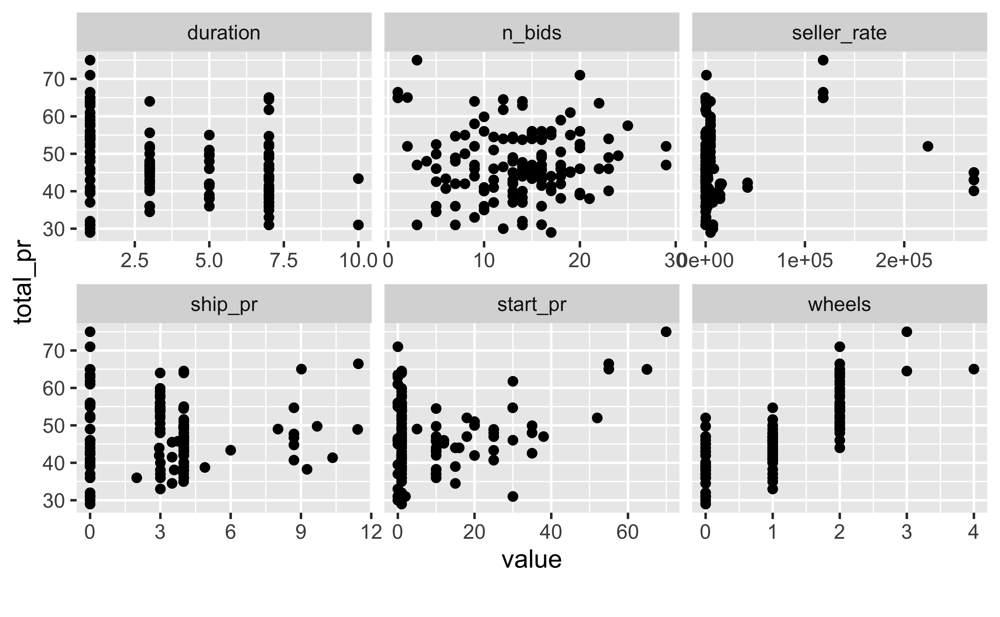
Ohne Extremwerte schält sich ein deutlicheres Bild hervor: Startpreis (start_pr) und Anzahl der Räder (wheels) scheinen am stärksten mit dem Abschlusspreis zusammenzuhängen. Das Argument by = "total_pr" bei plot_scatterplot weist R an, als Y-Variable stets total_pr zu verwenden. Alle übrigen Variablen kommen jeweils einmal als X-Variable vor. \(\square\)
Übungsaufgabe 5.9
Visualisieren Sie den Zusammenhang der beiden metrischen Variablen start_pr und total_pr. Verwenden Sie den Datensatz ohne Extremwerte wie oben definiert.
mariokart_no_extreme |>
select(start_pr, total_pr) |>
plot_scatterplot(by = "total_pr")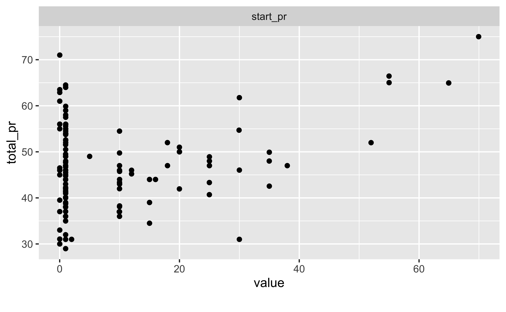
Zuerst wählt man die Spalten (mit select), die man visualisieren möchte, dann ruft man die Funktion plot_scatterplot auf. \(\square\)
5.7 Unterschiede verbildlichen
5.7.1 Unterschiede bei nominalen Variablen
Gute Nachrichten: Für nominale Variablen bieten sich Balkendiagramme sowohl zur Darstellung von Zusammenhängen als auch von Unterschieden an. Genau genommen zeigt ja Abbildung 5.17 (links) den Unterschied zwischen neuen und gebrauchten Spielen hinsichtlich der Frage, ob Fotos beiliegen. Und wie man in Abbildung 5.17 sieht, ist der Anteil der Spiele mit Foto bei den neuen Spielen höher als bei gebrauchten Spielen.
Aber Freunde lassen Freunde keine Tortendiagramme verwenden.
5.7.2 Unterschiede bei quantitativen Variablen
Eine typische Analysefrage ist, ob sich zwei Gruppen hinsichtlich einer metrischen Zielvariablen deutlich (substanziell) unterscheiden. So untersucht man z.\(\,\)B. oft, ob sich die Mittelwerte zweier Gruppen hinsichtlich der Zielvariablen deutlich unterscheiden. Das hört sich abstrakt an? Am besten wir schauen uns einige Beispiele an, s. Abbildung 5.26.


Das linke Teildiagramm von Abbildung 5.26 zeigt das Histogramm von total_pr, getrennt für neue und gebrauchte Spiele, vgl. Abbildung 5.9. Das rechte Teildiagramm zeigt die gleichen Verteilungen, aber mit einer vereinfachten, groberen Darstellungsform, den Boxplot.7 Was ein “deutlicher” (substanzieller, bedeutsamer, relevanter oder signifikanter) Zusammenhang ist, ist keine statistische, sondern inhaltliche Frage, die man mit Sachverstand zum Forschungsgegenstand beantworten muss.
Definition 5.10 (Boxplot) Der Boxplot ist eine Vereinfachung bzw. eine Zusammenfassung eines Histograms. Damit stellt der Boxplot auch eine Verteilung (einer metrischen Variablen) dar. \(\square\)
In Abbildung 5.27 sieht man die “Übersetzung” von Histogramm (oben) zu einem Boxplot (unten). Ob der Boxplot horizontal oder vertikal steht, ist Ihrem Geschmack überlassen.

Schauen wir uns die “Anatomie” des Boxplots näher an:
- Der dicke Strich in der Box zeigt den Median der Verteilung, vgl. Kapitel 6.3.
- Die Enden der Box zeigen das 1. Quartil (41) bzw. das 3. Quartil (54). Damit zeigt die Breite der Box die Streuung der Verteilung an, genauer gesagt die Streuung der inneren 50% der Beobachtungen. Je breiter die Box, desto größer die Streuung. Die Breite der Box nennt man auch den Interquartilsabstand (IQR).
- Die “Antennen” des Boxplots zeigen die Streuung in den kleinsten 25\(\,\)% der Werte (linke Antenne) bzw. die Streuung der größten 25\(\,\)% der Werte (rechte Antenne). Je länger die Antenne, desto größer die Streuung (in den äußeren Vierteln).
- Falls es aber Extremwerte gibt, so sollten die lieber einzeln, separat, außerhalb der Antennen gezeigt werden. Daher ist die Antennenlänge auf die 1.5-fache Länge der Box beschränkt. Werte die außerhalb dieses Bereichs liegen (also mehr als das 1.5-fache der Boxlänge von Q3 entfernt sind) werden mittels eines Punktes dargestellt.
- Liegt der Median-Strich in der Mitte der Box, so ist die Verteilung symmetrisch (bezogen auf die inneren 50\(\,\)% der Werte), liegt der Median-Strich nicht in der Mitte der Box, so ist die Verteilung nicht symmetrisch (d.\(\,\)h. sie ist schief). Gleiches gilt für die Antennenlängen: Sind die Antennen gleich lang, so ist der äußere Teil der Verteilung symmetrisch, andernfalls schief.
Beispiel 5.6 In einer vorherigen Analyse haben Sie den Zusammenhang von Abschlusspreis und der Anzahl der Lenkräder untersucht. Jetzt möchten Sie eine sehr ähnliche Fragestellung betrachten: Wie unterscheiden sich die Verkaufspreise je nach Anzahl der beigelegten Lenkräder? Flink erstellen Sie dazu folgendes Diagramm, Abbildung 5.28, links. Es zeigt die Verteilung des Abschlusspreises, aufgebrochen nach Anzahl Lenkräder (by = "wheels"). \(\square\)
Aber ganz glücklich sind Sie mit dem Diagramm nicht: R hat die Variable wheels komisch aufgeteilt. Es wäre eigentlich ganz einfach, wenn R die Gruppen 0, 1, 2, 3 und 4 aufteilen würde. Aber schaut man sich die Y-Achse (im linken Teildiagramm von Abbildung 5.28) an, so erkennt man, dass R wheels als stetige Zahl betrachtet und nicht in ganze Zahlen gruppiert. Vielleicht wird so gruppiert, dass in jeder Gruppe gleich viele Werte sind? Aber wir möchten jeden einzelnen Wert von wheels (0, 1, 2, 3, 4) als Gruppe verstehen. Mit anderen Worten, wir möchten wheels als nominale Variable definieren. Das kann man mit dem Befehl factor(wheels) erreichen (verpackt in mutate), s. Abbildung 5.28 rechts.
mariokart_no_extreme |>
select(total_pr, wheels) %>%
# Probieren Sie den Code mit bzw. ohne folgender Zeile:
mutate(wheels = factor(wheels)) |> # wheels als nominale Variable
plot_boxplot(by = "wheels") # Boxplot mit "wheels" auf der Y-Achse
wheels als metrische Variable

wheels als nominale Variable
Sie schließen aus dem Bild, dass Lenkräder und Preis (positiv) zusammenhängen. Allerdings scheint es wenig Daten für wheels == 4 zu geben. Das prüfen Sie nach:
Tatsächlich gibt es (in mariokart_no_extreme) auch für 3 Lenkräder schon wenig Daten, so dass wir die Belastbarkeit dieses Ergebnisses skeptisch betrachten sollten. Übrigens bezeichnet Sie Ihre Chefin nur noch als “Datengott”.
Übungsaufgabe 5.10 (Visualisieren Sie den Unterschied im Verkaufspreis zwischen gebrauchten und neuen Spielen.) Es gibt mehrere Diagrammtypen, die sich anbieten; mehrere Lösungen sind also möglich.
Lösung
mariokart_no_extreme |>
select(cond, total_pr) |>
plot_boxplot(by = "cond")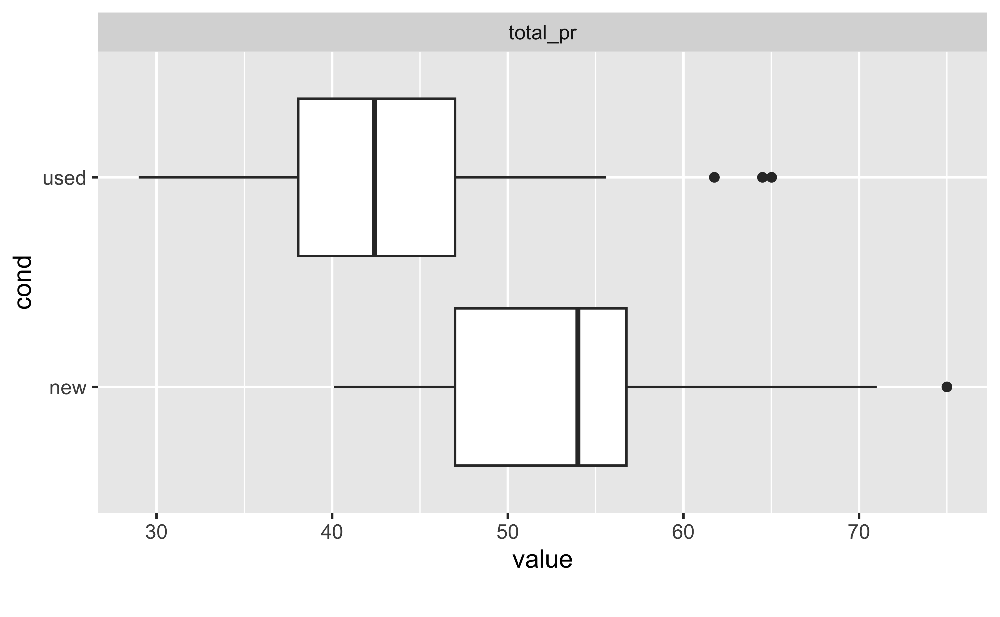
Boxplots sind eine gute Möglichkeit, die Verteilung einer metrischen Variablen, aufgebrochen auf mehrere Gruppen, zu visualisieren. \(\square\)
Übungsaufgabe 5.11 (Verkaufspreis im Vergleich) Visualisieren Sie den Unterschied im Verkaufspreis abhängig von ship_pr; betrachten Sie ship_pr als ein Gruppierungsvariable. Interpretieren Sie das Ergebnis.
Lösung
mariokart_no_extreme |>
select(ship_pr, total_pr) |>
plot_boxplot(by = "ship_pr")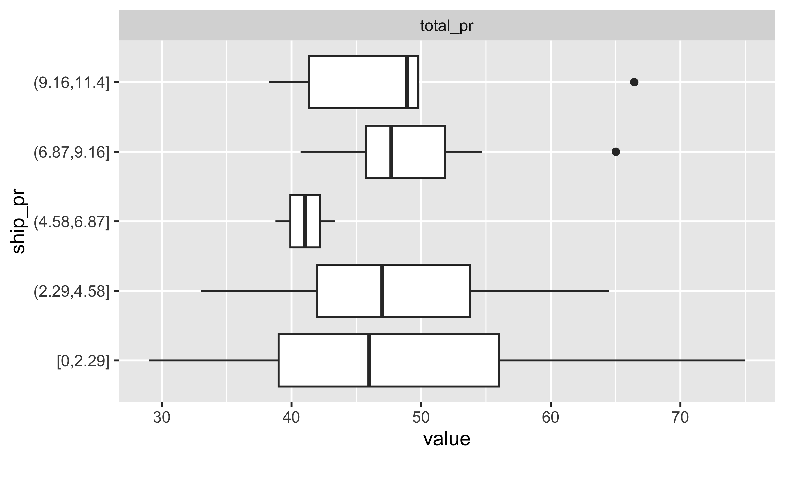
plot_boxplot gruppiert metrische Variablen, wie ship_pr automatisch in fünf Gruppen (mit gleichen Ranges). Wir müssen also nichts tun, um die metrische Variable ship_pr in eine Gruppierungsvariable (Faktorvariable) umzuwandeln. Es sieht so aus, als würde der Median zwischen den Gruppen leicht steigen, mit Ausnahme der mittleren Gruppe. \(\square\)
5.8 So lügt man mit Statistik
Diagramme werden mitunter eingesetzt, um die Wahrheit “aufzuhübschen”. Achsen zu stauchen, ist ein recht beliebter Trick, s. Abbildung 5.30. Natürlich kann man auch durch “Abschneiden” der Y-Achse einen eindrucksvollen Effekt erzielen, s. Abbildung 5.31. Scheinkorrelationen als “echte”, also kausale Effekte zu verkaufen, ist ein anderer Trick, den man immer mal wieder beobachten kann. Ein Beispiel: Messerli (2012) berichtet von einem Zusammenhang von Schokoladenkonsum und Anzahl von Nobelpreisen (Beobachtungseinheit: Länder), s. Abbildung 5.29. Das ist doch ganz klar: Schoki futtern macht schlau und Nobelpreise! (?) Leider ist hier von einer Scheinkorrelation auszugehen: Auch wenn die beiden Variablen Schokoladenkonsum und Nobelpreise zusammenhängen, heißt das nicht, dass die eine Variable die Ursache und die andere die Wirkung sein muss. So könnte auch eine Drittvariable im Hintergrund die gleichzeitige Ursache von Schokoladenkonsum und Nobelpreise sein, etwa der allgemeine Entwicklungsstand des Landes: In höher entwickelten Ländern wird mehr Schokolade konsumiert und es werden mehr Nobelpreise gewonnen im Vergleich zu Ländern mit geringerem Entwicklungsstand.


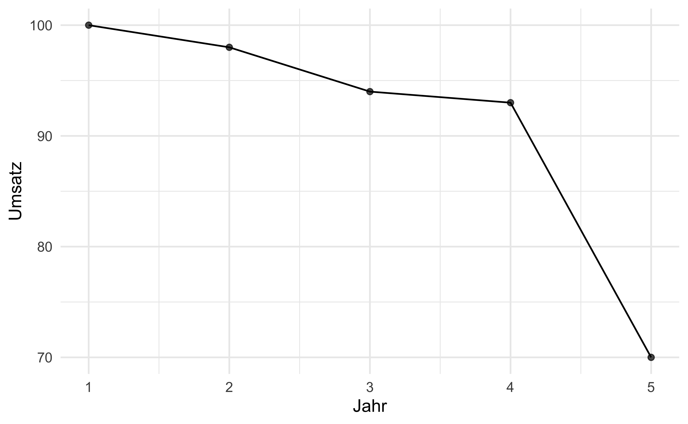

5.9 Praxisbezug
Ein, wie ich finde, schlagendes Beispiel zur Stärke von Datendiagrammen ist Abbildung 5.32. Das Diagramm zeigt die Häufigkeit von Masern, vor und nach der Einführung der Impfung. Die Daten und die Idee zur Visualisierung gehen auf van Panhuis et al. (2013) zurück.

In der “freien Wildbahn” findet man häufig sog. “Tortendiagramme”. Zwar sind sie beliebt, doch von ihrer Verwendung ist zumeist abzuraten, denn bei Tortenstücken ist es schwer, die Größe zu vergleichen.
Freunde lassen Freunde keine Tortendiagramme zeichnen.
5.10 Aufgaben
Die Webseite datenwerk.netlify.app stellt eine Reihe von einschlägigen Übungsaufgaben bereit. Sie können die Suchfunktion der Webseite nutzen, um die Aufgaben mit den folgenden Namen zu suchen:
- boxhist
- max-corr1
- max-corr2
- Histogramm-in-Boxplot
- Diamonds-Histogramm-Vergleich2
- Boxplot-Aussagen
- boxplots-de1a
- movies-vis1
- movies-vis2
- vis-gapminder
- boxplots-de1a
- diamonds-histogramm-vergleich
- wozu-balkendiagramm
- diamonds-histogram
- n-vars-diagram
Weitere Aufgaben zum Thema Datenvisualisierung finden Sie im Datenwerk unter dem Tag vis.
5.11 Vertiefung
Mehr Informationen zu DataExplorer finden Sie hier.
5.11.1 Animation
Eine weitere nützliche Art von Visualisierung sind Karten, 3D-Bilder und Animationen. So zeigt z.\(\,\)B. Abbildung 5.33 die Veränderung der Lebenserwartung (in Jahren) über die letzten Dekaden.8

In einigen Situation können Animationen zweckdienlich sein. Außerdem sind sie mitunter nett anzuschauen, s. Abbildung 5.34.

Natürlich sind der Fantasie keine Grenzen beim Visualisieren gesetzt, so ist etwa diese Animation ziemlich beeindruckend. 9
5.11.2 Schicke Diagramme
Ein Teil der Diagramme dieses Kapitels wurden mit dem R-Paket ggpubr erstellt. Mit diesem Paket lassen sich einfach ansprechende Datendiagramme erstellen.
Möchte man Mittelwerte vergleichen, so sind Boxplots nicht ideal, da diese ja nicht den Mittelwert, sondern den Median herausstellen. Eine Abhilfe (also eine Darstellung des Mittelwerts) schafft man (z.\(\,\)B.) mit ggpubr und der Funktion ggviolin, s. Abbildung 5.35.
ggviolin(mariokart_no_extreme,
x = "cond", y = "total_pr", add = "mean_sd") 
Weitere Varianten zum Violinenplot mit ggpubr finden sich hier.10
Ein “Violinenplot” hat die gleiche Aussage wie ein Dichtediagramm: Je breiter die “Violine”, desto mehr Beobachtungen gibt es an dieser Stelle. Übrigens sind Modelle – und Diagramme sind Modelle – immer eine Vereinfachung, lassen also Informationen weg. Manchmal auch wichtige Informationen.
Dieses Beispiel zeigt, wie etwa Histogramme wichtige Informationen unter den Tisch fallen lassen.11 Ein weiteres R-Paket zur Erstellung ansprechender Datenvisualisierung heißt ggstatsplot.12 Abbildung 5.36 zeigt ein Histogramm, das mit ggstatsplot erstellt wurde.13
library(ggstatsplot)
gghistostats(
data = mariokart_no_extreme,
x = total_pr,
xlab = "Verkaufspreis"
# results.subtitle = FALSE # unterdrückt statist. Details
)
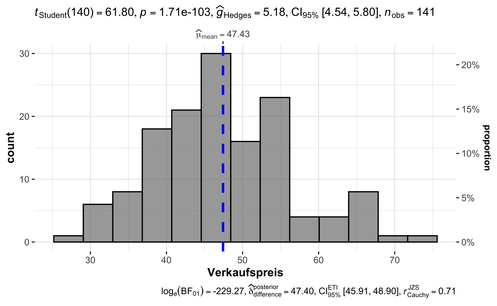
Die Menge der statistischen Kennzahlen bei ggstatsplot schindet ordentlich Eindruck. Möchte man auf die Kennzahlen verzichten, so nutzt man den Schalter results.subtitle = FALSE. (Weitere Hinweise finden sich auf der Hilfeseite der Funktion der Funktion.)
üë©‚Äçüè´ Ich w√ºrde gerne mal Beispiele von schlechten Datendiagrammen sehen.
üßë‚Äçüéì Auf der Seite von Flowingdata findet sich eine nette Liste mit schlechten Datendiagrammen.14
5.11.3 Farbwahl
Einige Überlegungen zur Farbwahl findet sich bei Wilke (2019), Kap. 4. Die Farbpalette von Okabe und Ito ist (vgl. Ichihara et al., 2008) empfehlenswert, das sie über über optisch gut unterscheidbarer und klar benennbare Farben verfügt. Außerdem erlaubt sie bei Sehschwächen die Farben noch recht gut zu unterscheiden, s. Abbildung 5.37. Möchte man sie für Schwarz-Weiß-Druck verwenden, kann man angeben, dass als erste Farbe Schwarz verwendet werden soll; dazu nutzt man den Paramter palette = "black_first". Alternativ kann man händisch eine helle Farbe und eine dunkle Farbe als Kontrast aussuchen.
mariokart %>%
filter(total_pr < 100) %>%
ggboxplot(x = "cond", y = "total_pr", fill = "cond", notch = TRUE) +
scale_fill_okabeito(palette = "black_first")
#scale_fill_manual(values = c("#0072B2", "#E69F00"))
Mit fill = cond erreicht man, dass die Füllfarbe der Variable cond zugeordnet wird: Jeder Wert von cond (new/used) bekommt eine eigene Farbe. Welche das ist, hängt vom verwendeten Farbschema ab. Hier wird das Farbscheme von Okabe und Ito verwendet (Ichihara et al., 2008).
Übungsaufgabe 5.12 Schauen Sie sich die Farbpalette von Okabe und Ito einmal näher an, z.\(\,\) so:
Die Füllfarbe eines Diagramms, z.\(\,\) in Abbildung 5.37, können Sie ändern, indem Sie scale_fill_okabeito ersetzen durch scale_fill_manual(values = c("#0072B2", "#E69F00")). Probieren Sie dabei verschiedene Farben aus. \(\square\)
5.12 Literaturhinweise
Sowohl ggpubr (Kassambara, 2023) als auch DataExplorer (Cui, 2024) (und viele andere R-Pakete) bauen auf dem R-Paket ggplot2 (Wickham, 2016) auf. ggplot2 ist eines der am weitesten ausgearbeiteten Softwarepakete zur Erstellung von Datendiagrammen. Das Buch zur Software (vom Autor von ggplot2) ist empfehlenswert (Wickham, 2016). Eine neuere, gute Einführung in Datenvisualisierung findet sich bei Wilke (2019). Beide Bücher sind kostenfrei online lesbar. Wilke (2019) gibt einen hervorragenden Überblick über praktische Aspekte der Datenvisualisierung; gut geeignet, wenn man mit R arbeitet. In ähnlicher Richtung geht Fisher & Meyer (2018).
Hier ist eine Liste von Büchern zum Thema; dort können Sie bei Interesse tiefer suchen.
Grob gesagt:
mariokart %>% plot_density().↩︎Quelle: ifes/FOM Hochschule, https://github.com/FOM-ifes/VL-Vorlesungsfolien↩︎
Quelle: https://observablehq.com/@mcmcclur/the-normal-model↩︎
Quelle: Aufbauend auf FOM/ifes, Autor: Norman Markgraf↩︎
Übrigens: Freunde lassen Freunde nicht Balkendiagramme verwenden, um Mittelwerte darzustellen: https://github.com/cxli233/FriendsDontLetFriends#1-friends-dont-let-friends-make-bar-plots-for-means-separation.↩︎
Der Quellcode der Animation ist hier zu finden: https://gist.github.com/rafapereirabr/0d68f7ccfc3af1680c4c8353cf9ab345.↩︎
https://www.tylermw.com/wp-content/uploads/2019/06/featuredmeasles.mp4↩︎
https://rpkgs.datanovia.com/ggpubr/reference/ggviolin.html↩︎
https://www.autodesk.com/research/publications/same-stats-different-graphs↩︎
https://github.com/IndrajeetPatil/ggstatsplot/blob/main/README.md↩︎
https://github.com/IndrajeetPatil/ggstatsplot/blob/main/README.md#gghistostats↩︎
https://flowingdata.com/category/visualization/ugly-visualization/↩︎